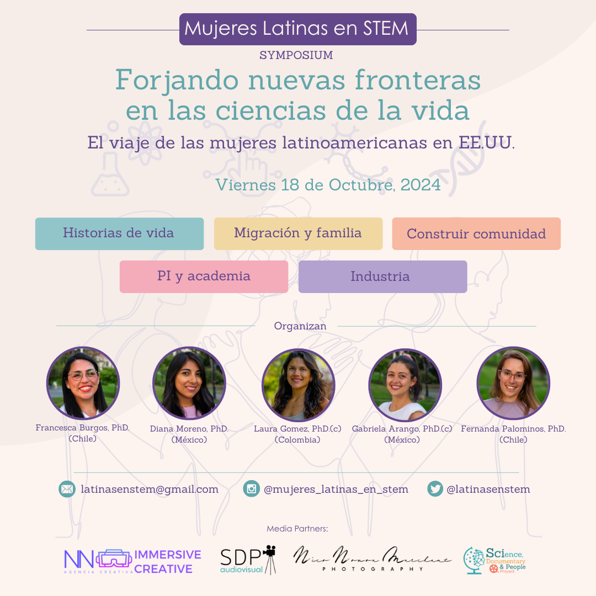

El viaje de las mujeres latinoamericanas STEM en EE.UU.
Si puedes viajar, o vives en el Área de la Bahía, California, queremos invitarte a participar de nuestro primer encuentro presencial, totalmente gratuito, que se realizará el viernes 18 de Octubre de 2024, de 8:30 am - 5:30 pm, en el Consulado General de México en San Francisco. Este encuentro será en español, y también será transmitido por live-streaming. La registración para el simposio comenzará la segunda semana de Agosto ¡te esperamos!
Las invitadas magistrales a nuestro simposio son:
Dr. Daiana Andrea Capdevilla, química argentina, galardoneada con la beca L'Oréal-UNESCO "Mujeres en la Ciencia" por sus estudios
revolucionarios acerca de la contaminación de aguas. Daiana hizo su investigación postdoctoral en Northwestern University, EE.UU.,
y actualmente es investigadora principal en la Fundación Instituto Leloir.
Dr. Kelly M. Cautivo, inmunólogca chilena, fue investigadora
Postdoctoral en la University of California, San Francisco, en EE.UU., pero gracias a su trabajo innovador en la regulación de la inflamación
por interferon gamma y linfocitos, es hoy en día investigadora en la compañía biofarmaceútica Gilead Sciences, en Foster City, California.
Dr. N. Cecilia Martínez-Gomez, microbióloga mexicana, es actualmente Profesora Asociada de la Universtiy of California, Berkeley, en el
Departamento de Plant and Microbial Biology. La investigación de Ceci tiene como objetivo impulsar plataformas bacterianas para mejorar
las industrias agrícolas y energéticas, enfocándose en la biorremediación, biolixiviación, y el reciclaje de residuos electrónicos.
También contaremos con la participación de las siguientes panelistas: Dr. Estefanía Sánchez-Vasquez, bióloga del desarrollo peruana, que investiga modelos de desarrollo humano temprano; Dr.(c) Valeria Ramírez-Castañeda, bióloga evolutiva y herpetóloga, cuya investigación está enfocada en la conservación de la herpetofauna y su relación con comunidades amazónicas; y la Ms. Javiera Canales-Valenzuela, físicoquímica chilena, cuya investigación se enfoca en el desarrollo de sistemas urbanos sustentables.